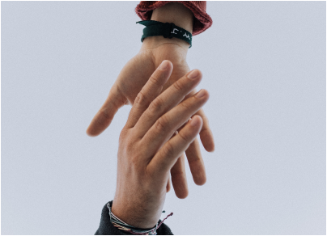
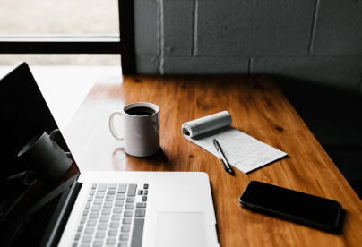

User Empathy
Using affinity diagrams and empathy diagrams I am able to understand the users thoughts and feeling, and even what they might say during the task given.
Interviewing
Conducting 1:1 interviews via Zoom using qualitative and quantitative questions. It's important to understand the users pain points and how you might be able to alleviate them.

User Research
Approaching user research with an open mind is key. I like to start by getting to know my user first, asking demographic questions, then moving into their thoughts and feeling about the redesign.